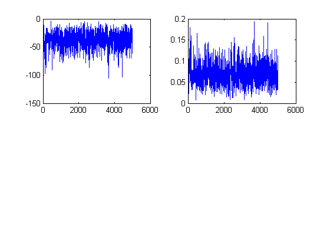
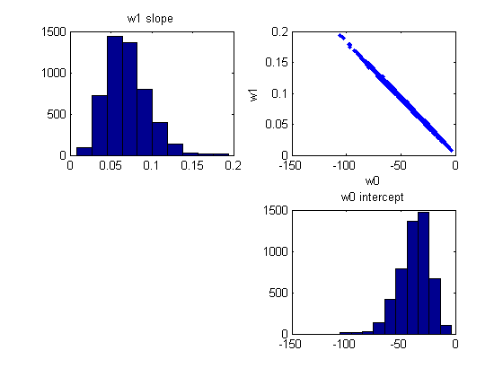
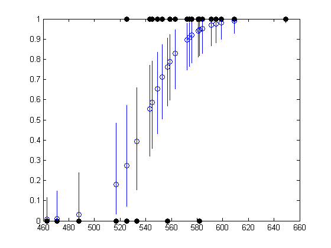
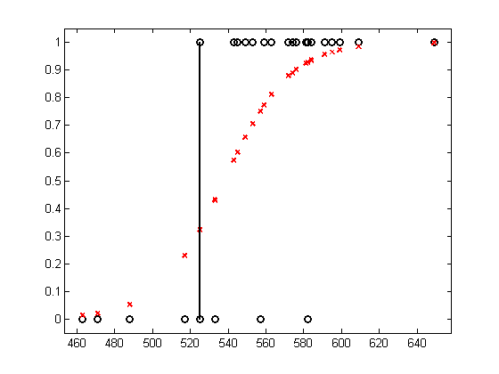

function [X, y, ws, perm] = logregGradeMH() % Example from Johnson and Albert p87 [X,y] = satDataLoad; model = logregBinaryFitL2IRLS(X, y, 1e-8, false); w = model.w; C = model.C; % MH setSeed(1); xinit = w; Nsamples = 5000; lambda = 0; targetArgs = {X,y,lambda}; sigmaMH = 1.5; proposalArgs = {sigmaMH*C}; [ws, naccept] = metropHastings(@logpost, @proposal, xinit, Nsamples, targetArgs, proposalArgs); % trace plots figure for i=1:2 subplot(2,2,i) plot(ws(:,i)) end % samples figure subplot(2,2,1) hist(ws(:,2)) title('w1 slope') subplot(2,2,2) plot(ws(:,1), ws(:,2), '.') xlabel('w0'); ylabel('w1') subplot(2,2,4) hist(ws(:,1)) title('w0 intercept') MLE = xinit postMean = mean(ws,1) postMedian = median(ws,1) % visualize model fit for each training point figure perm = sortidx(X(:, 2), 'ascend'); N = length(perm); for ii=1:N i = perm(ii); ps = 1 ./ (1+exp(-X(i,:)*ws')); % ps(s) = p(y=1|x(i,:), bs(s,:)) row vec plot(X(i,2), median(ps), 'o'); hold on h=plot(X(i,2), y(i), 'ko'); set(h,'markerfacecolor', 'k'); % prediction interval tmp = sort(ps, 'ascend'); Q5 = tmp(floor(0.05*Nsamples)); Q95 = tmp(floor(0.95*Nsamples)); line([X(i,2) X(i,2)], [Q5 Q95]); end logregSATdemo end %%%%%%%%% function bnew = proposal(w, Sigma) model.mu = zeros(1, length(w)); model.Sigma = Sigma; bnew = w + gaussSample(model); end function p = logpost(w, X, y, lambda) mu = 1 ./ (1 + exp(-X*w(:))); p = sum( (y.*log(mu) + (1-y).*log(1-mu))) + lambda/2*sum(w.^2); end %{ stat = load('satData.txt'); % Johnson and Albert p77 table 3.1 % stat=[pass(0/1), 1, 1, sat_score, grade in prereq] % where the grade in prereq is encoded as A=5,B=4,C=3,D=2,F=1 y = stat(:,1); N = length(y); X = stat(:,4); X1 = [ones(N,1) X]; lambda = 1e-10; model = logregBinaryFitL2IRLS(X,y, lambda); beta = model.w; C = model.C; % MH setSeed(1); xinit = beta; Nsamples = 10000; lambda = 0; sigmaMH = 1.5; %targetArgs = {X,y,lambda}; %proposalArgs = {sigmaMH*C}; target = @(b) logpost(b, X1, y, lambda); prop = @(b) proposal(b, sigmaMH*C); [bs, acceptRatio] = metropolisHastings(target, prop, xinit, Nsamples); %[bs, naccept] = metrop(@logpost, @proposal, xinit, Nsamples, targetArgs, proposalArgs); % trace plots figure for i=1:2 subplot(2,2,i) plot(bs(:,i)) end % samples figure subplot(2,2,1) hist(bs(:,2)) title('b1 slope') subplot(2,2,2) plot(bs(:,1), bs(:,2), '.') xlabel('b0'); ylabel('b1') subplot(2,2,4) hist(bs(:,1)) title('b0 intercept') MLE = xinit postMean = mean(bs,1) postMedian = median(bs,1) % visualize model fit for each training point figure [junk,perm] = sort(X,'ascend'); N = length(perm); for ii=1:N i = perm(ii); ps = 1 ./ (1+exp(-X1(i,:)*bs')); % ps(s) = p(y=1|x(i,:), bs(s,:)) row vec plot(X(i,1), median(ps), 'o'); hold on h=plot(X(i,1), y(i), 'ko'); set(h,'markerfacecolor', 'k'); % prediction interval tmp = sort(ps, 'ascend'); Q5 = tmp(floor(0.05*Nsamples)); Q95 = tmp(floor(0.95*Nsamples)); line([X(i) X(i)], [Q5 Q95]); end %%%%%%%%% function bnew = proposal(b, Sigma) model = struct('mu', zeros(1, length(b)), 'Sigma', Sigma); bnew = b + gaussSample(model); function p = logpost(b, X, y, lambda) logprior = 0; % log(1) offsetAdded = true; fn = @(w)LogisticLossSimple(w, X, y); p = -penalizedL2(b(:), fn, lambda) + logprior; %p = -logregL2NLLgradHess(b(:), X, y, lambda, offsetAdded) + logprior; %}
MLE =
-31.1146
0.0578
postMean =
-37.7267 0.0699
postMedian =
-36.1595 0.0671
Warning: Log of zero. This warning will be
removed in a future release.
Consider using DBSTOP IF NANINF when
debugging.
Warning: Log of zero. This warning will be
removed in a future release.
Consider using DBSTOP IF NANINF when
debugging.
Warning: Log of zero. This warning will be
removed in a future release.
Consider using DBSTOP IF NANINF when
debugging.
Warning: Log of zero. This warning will be
removed in a future release.
Consider using DBSTOP IF NANINF when
debugging.
Warning: Log of zero. This warning will be
removed in a future release.
Consider using DBSTOP IF NANINF when
debugging.
ans =
463
471
488
517
525
525
533
543
545
549
553
557
557
559
563
572
574
574
576
576
581
582
582
584
584
591
595
599
609
649
   